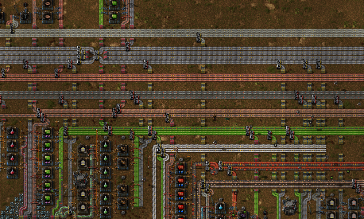
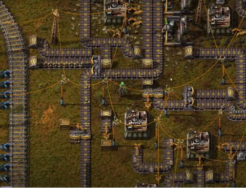

Макаронная фабрика
В игре вам предстоит строить огромные конвейерные ленты, по которым будут перемещаться различные ресурсы. И есть 2 варианта как их сделать. Во-первых, сделать грамотно шину и по ней всё перемещать. Так вы сможете легко контролировать просадки по конкретным ресурсам и легко сможете исправить проблему. А также, вы с лёгкостью будете понимать, где какое производство у вас стоит и какие ресурсы требуются для него.

Или же, вы можете сделать так называемую “макаронную фабрику”. Создавать её категорически не рекомендуется!
- На ней вы с трудом сможете понять какое у вас производство реализовано, а какое нет
- Не понятно какие нужны ресурсы для производства
- Сложно оценить нехватку ресурсов
- Трудно увеличивать производство
- Достигнув определенного уровня логистики, банально забываешь базовую логику.

Уже на начальных этапах игры важно делать шину, по которой будут идти все ресурсы и если её не сделать, то будет всё очень печально к середине игры. А заново перестраивать всю базу, когда добываешь кучу ресурсов - не круто!